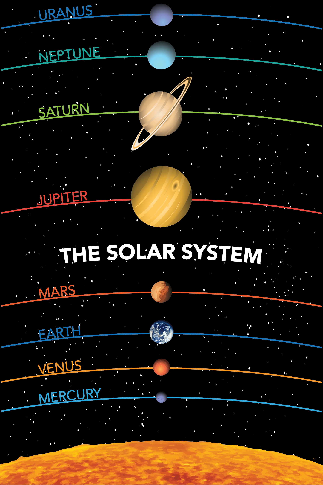

Portfolio
-

Informatics 200 Infographic
This was the final project for my Informatics 200 class, which won "Best Poster" at the presentation. The project was to describe an information resource, in our case "GroShary" the grocery sharing app for roommates. I acted as the leader of my group and we went through the design process together. I ended up making the final design of the poster in Adobe Illustrator. This was my first exposure to Illustrator and I truly learned from doing as well as valuable leadership and communication skills. -
Earth Poster
This poster was the first in a series I recently completed. The purpose of the series is to create attractive infographics to serve as public outreach for the Astronomy department at the University of Washington. -

Solar System Poster
This is the second poster I made for the Astronomy Department's public outreach series, depicting the Solar System. The entire series will be printed and displayed in the Physics and Astronomy building on the University of Washington Seattle campus. -
Milky Way Poster
The third poster I made for the Astronomy department's public outreach series depics the Milky Way, the galaxy containing our Solar System. To see the rest of the posters in the series, click on any of the Astronomy infographics!